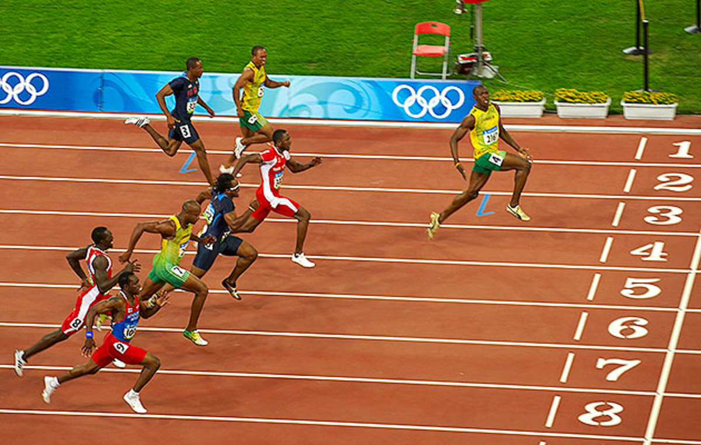

International Olympic Committee
Comité International Olympique

Citius, Altius, Fortius
Faster, Higher, Stronger
Plus Vite, Plus Haut, Plus Fort

What is the Olympics?
The Olympic Games, are a major
international multi-sport
event normally held once every four years.
The International Olympic Committee (IOC)
organises the Games and oversees
the host city's preparations. In each Olympic event,
gold medals are awarded for first place,
silver medals are awarded for second place,
and bronze medals are awarded for third place

What is the meanin of the Olympic rings?
The rings are five interlocking rings,
coloured blue, yellow, black, green and red on a
white field, known as the "Olympic rings".
The symbol was originally created in 1913 by Coubertin.
He appears to have intended the rings to represent
the five continents: Europe, Africa, Asia, the Americas, and Oceania.